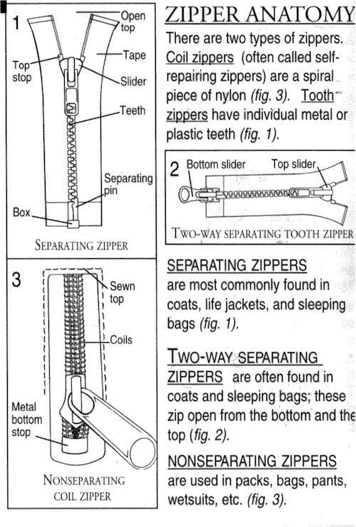

FAQ
|
Are the kits easy to use? The eight-page zipper repair manual contained in each kit has detailed step-by-step instructions along with illustrations. Replacing a slider on a jacket takes about five minutes and is done at the top of the zipper. Replacing a slider on a tent also takes about five minutes and is done at the bottom of the zipper. My slider fell off the bottom of my jacket. Will your kit repair this? If the box or pin on the bottom of a jacket are damaged, they cannot be repaired. The entire zipper needs to be replaced. Please call ZRK at (541) 482-5020 to order your replacement zippers. What if I need help? We have a zipper help line (1-541-482-5020) for those customers needing additional parts or extra repair advice. In addition to replacement parts for our kits, ZRK has a large variety of hard-to-find sliders on hand for nearly every zipper alive.  |
"Your terrific product with detailed and humorous instructions put the 'zip' back into my jacket's zipper. This is definately a product that you can swear by, not at. You certainly are the Doctor of Zipology."
Hartland, MI |
|
Questions? Call (541) 482-5020 OR Email ZRK Enterprises
The Original Zipper Rescue Kit®, Powered by Infostructure |